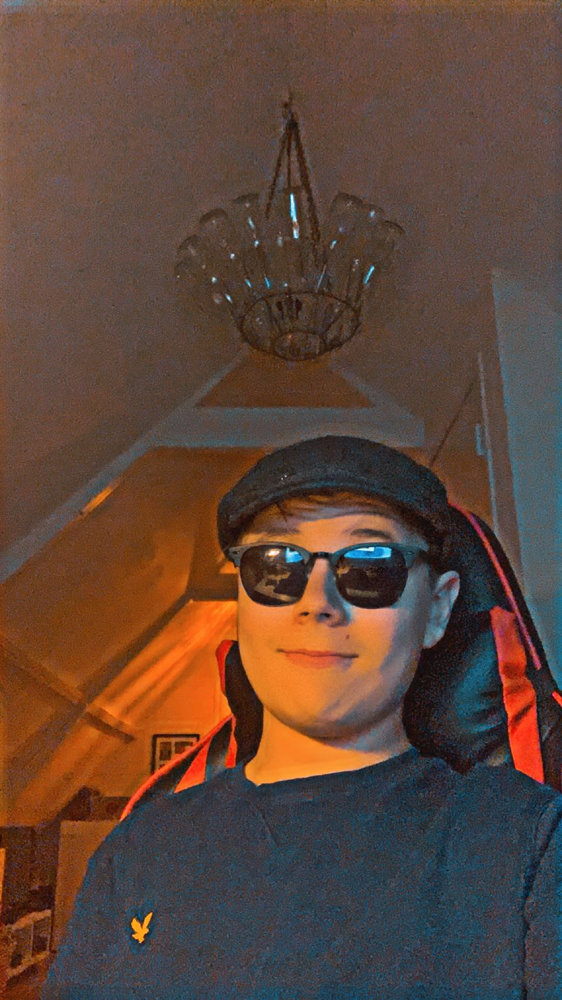

over 4 jaar
Mijn tech skills
Ik hoop aan het einde van deze opleiding HTML uit me hoofd te
hebben geleerd en een
tijd heb gehad bij mijn stage bedrijf.
Ik zal dan meerdere codetalen hebben geleerd en besmeesterd hebben
(hoop ik).
Ook zal dan een website hebben gemaakt waarmee ik mensen
die minder vaak te maken hebben met het internet het makkelijker voor hun
maken om het te gebruiken,
vooral mensen die wat ouder zijn en niet
zijn opgegroeid met het internet, zoals opa's en oma's.
Mijn andere achievment
is dat ik een website heb gamaakt waarmee ik mensen in de zorg kan helpen
door een makkelijker systeem voor ze te maken.
Ik hoop dat ik ook veel
beter ben in javascript dan dat ik nu ben.
Mijn softskills
Mijn betere softskill is na deze opleiding sowieso samenwerken. samenwerken
is iets
wat je op de opleiding nog veel gaat doen en moet doen. communiceren
is nu
ook een van me beste kanten, maar ik hoop de komende 4 jaar nog meer verbetering in te zien
er zal veel verbetering moeten zijn bij het plannen van mijn werk. Op dit moment
is dat een van
van me slechtere vaardigheden,
maar ik hoop dat dit na de opleiding een ander geval is. Optijd beginnen is er
hier een van
positiviteit vind ik ook een belangrijke softskill om te hebben, aangezien dit je
positief tegenover je werk zet
en je teminste met een goed gevoel aan je werk gaat werken.
Niemand wilt namelijk chagrijnig aan zijn werk zitten,
tuurlijk kan dat wel is, maar het is
altijd belangrijke om in sommige dingen toch het positieve te zien
Wat wil ik bereikt hebben?
Ik hoop dat ik een hele grote en mooie website heb gemaakt waarmee ik oudere mensen kan helpen
zodat hun het internet beter en makkelijker kunnen begrijpen.
ook hoop ik dit soort dingen Ook
in andere soorten codetaal kan maken.
Ook wil ik een team maken waarin er meerdere mensen aan 1 grote
website maken, want dan word het ook echt een mooie website waar meerdere mensen hun tijd aan besteden.
ik hoop met deze website ook mensen te kunnen helpen die het internet maar wat minder
goed begrijpen.
Het laatste wat ik wil bereiken is dat ik goed en trots zal slagen voor deze
opleiding
en dat ik met een goed gevoel kan terugblikken op deze opleiding.
Ik wil hier zo veel mogelijk mooie websites kunnen maken.
Wat na MA?
Na MA ben ik van plan gelijk te gaan werken, misschien zal ik nog
van mening veranderen
over de jaren heen, maar op dit moment ben ik niet
van plan nog een opleiding te gaan doen. Ik zat ooit nog te denken aan naar een
universiteit gaan, maar dat ben ik nu niet meer van plan.
Als ik begin met werken, ben ik van plan om nog niet een bedrijf te starten,
maar juist voor iemand te
werken. ik zie mezelf namelijk nog als iemand die
als baas zou kunnen werken bij een bedrijf. Dus ik begin als
medewerker voor iemand
en ga dan uiteindelijk uitgroeien tot een hogere functie of zelfs de CEO van mijn eigen
bedrijk zijn
als ik dan een eigen bedrijf zou hebben, dan hoop ik met dit bedrijf, zoals ik al eerder
zei, oudere mensen
het internet beter te laten begrijpen en een website voor hun maken waar
ze allerlei informatie kunnen vinden over hoe het internet werkt en wat je ervan kan verwachten.
Mijn droombaan Dagboek
8:30 allemaal verzamelen op kantoor
9:00 wat we allemaal gaan doen en taken verdelen
9:30 aan het werk tot pauze
12:00 pauze houden en vertellen waarmee we bezig waren
13:00 weer bezig met werk
17:00 klaar met werk
een andere droom
Een andere droom waarvan ik zou willen dat hij misschien uitkomt is dat mijn
eigen bedrijf heel succesvol word en veel
invloed zal hebben op het leven van
mensen. dus dat de mensen in de zorg dankzij
mijn bedrijf hun werk makkelijker
zal worden of dus dat heel veel oude mensen mijn website zullen gebruiken. Dat is mijn droom